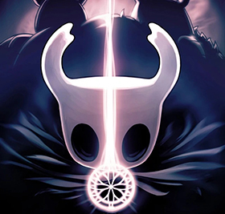

Hidden Dreams
Poderosos novos inimigos surgem! Novas lutas contra chefes. Novas atualizações. Nova Música.
Sob a cidade decadente de Dirtmouth, dorme um vasto e antigo reino. Muitos são atraídos para baixo da superfície, em busca de riquezas, glória ou respostas para velhos segredos. Como o enigmático Cavaleiro, você atravessará as profundezas, desvendará seus mistérios e vencerá seus males.
Hollow Knight é um desafiador jogo de ação e aventura em 2D. Você explorará cavernas sinuosas, lutará contra criaturas maculadas e escapará de armadilhas intrincadas, tudo para resolver um antigo mistério oculto há muito tempo.
O mundo de Hollow Knight ganha vida com detalhes vívidos e melancólicos, suas cavernas vivas com criaturas bizarras e aterrorizantes, cada uma animada à mão em um estilo 2D tradicional.
Cada nova área que você descobrirá é maravilhosamente única e estranha, repleta de novas criaturas e personagens para descobrir. Vale a pena explorar o mundo de Hollow Knight apenas para apreciar as vistas e descobrir novas maravilhas escondidas fora do caminho batido.


Poderosos novos inimigos surgem! Novas lutas contra chefes. Novas atualizações. Nova Música.

Acenda a Lanterna do Pesadelo. Convoque a Trupe. Nova missão principal. Novas lutas contra chefes. Novos encantos. Novos inimigos. Novos aliados.
Um reino atualizado! Novo chefe. Chefes atualizados. Ajustes e refinamentos em todo o jogo.
Tome seu lugar entre os Deuses. Novos personagens e missões. Novas lutas contra chefes. Nova Música Épica!